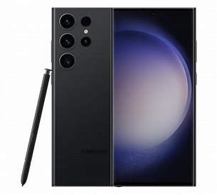
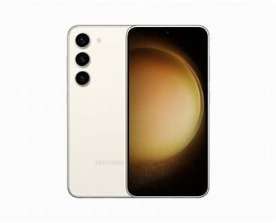

Here you can find the best mobile phones at the best prices.
The Apple iPhone is a popular smartphone created by the Apple Inc. It was first introduced in 2007 by Steve Jobs, and it completely changed the way people use mobile phones. The iPhone combines a phone, internet browser, camera, music player, and many other features into one powerful device. One of the most important features of the iPhone is its touchscreen display, which allows users to control the phone with simple finger gestures instead of physical buttons. The iPhone runs on Apple’s operating system called **iOS**, which is known for its smooth performance, strong security, and regular updates. iPhones come with high-quality cameras that allow users to take clear photos and record high-definition videos. They also support millions of apps that can be downloaded from the Apple App Store, including games, educational apps, and social media platforms. Another key feature is Apple’s ecosystem. iPhones work well with other Apple devices like the Apple Watch, AirPods, and MacBook, making it easy to share files and stay connected across devices. Overall, the iPhone is known for its premium design, powerful performance, strong security, and user-friendly interface, which is why it is one of the most popular smartphones in the world today. 📱✨
.jpeg)
.jpeg)
.jpeg)
Samsung Electronics is one of the largest technology companies in the world and is part of the Samsung Group, a multinational conglomerate based in Seoul, South Korea. The company was originally founded in 1938 by Lee Byung‑chul as a small trading company. Over time, it expanded into many industries including electronics, shipbuilding, construction, and finance. Today, Samsung Electronics is best known for its consumer electronics and advanced technology products. Samsung produces a wide range of devices such as smartphones, televisions, home appliances, semiconductors, and display panels. Its smartphones are especially popular around the world. The Samsung Galaxy series includes flagship models like the Samsung Galaxy S series and Samsung Galaxy Z Fold foldable phones. These devices usually run on the Android operating system with Samsung’s customized interface called One UI. Samsung is also a global leader in semiconductor manufacturing and produces memory chips used in many electronic devices worldwide. The company invests heavily in research and development to create new technologies such as foldable displays, advanced cameras, and faster processors. Overall, Samsung is known for innovation, high-quality electronics, and strong competition with companies like Apple Inc. in the global smartphone market. 📱💻


OnePlus is a Chinese smartphone manufacturer known for creating high-performance devices with clean software and fast charging capabilities. The company was founded in 2013 and has quickly gained a reputation for offering flagship-level performance at competitive prices. OnePlus smartphones typically run on the Android operating system with a minimalist user interface called OxygenOS, which is designed to provide a smooth and efficient experience. The devices are known for their sleek designs, powerful processors, and excellent camera performance. The OnePlus Nord series offers mid-range options with great value, while the OnePlus 10 Pro and OnePlus 11 are flagship models that compete directly with other high-end smartphones in terms of performance and features. Overall, OnePlus is recognized for its focus on user experience, fast charging technology, and timely software updates. 📱⚡
.jpg)
.jpg)
.jpg)